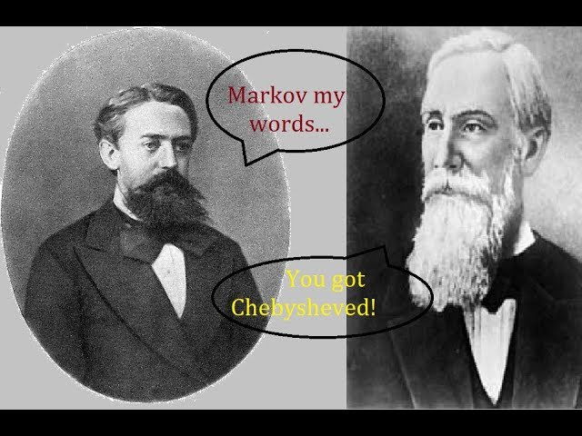

Section 7
Last Updated: 2 Nov 2023
Date: 3 Nov 2023
Welcome Back
In this section, we will discuss:
- How was Midterm?
- Multivariate Normal
Definition by Representation
Let’s define what is MVN, building from i.i.d of univariate Normals.
Definition 1 (Multivariate Normal) The random vector \(\mathbf{Y} = (Y_1, Y_2, \cdots, Y_k)\) has the Multivariate Normal Distribution if it is the form \[\mathbf{Y} = A \mathbf{Z} + \mathbf{\mu}, \] where \(Z_1, Z_2, \cdots, Z_m\) are i.i.d \(N(0,1)\) random variable, \(A\) is a \(k\) by \(m\) matrix, and \(\mathbf{\mu} \in \mathbb{R}^k\). We write \(\mathbf{Y} \sim N_k(\mathbf{\mu}, V)\) if \(\mathbf{Y}\) is a Multivariate Normal of dimension \(k\) with mean \(\mathbf{\mu}\) and covariance matrix \(V\).
Definition 2 (Multivariate Normal by Projections).A random vector \(\mathbf{Y}\) is multivariate normal if and only if every non zero linear combination of its components,\(\mathbf{b}^T\mathbf{Y}\) where \(\mathbf{b}=0\),is distributed according to a univariate normal.
Properties about Multivariate Normal
Theorem 1 (Cramér-Wold device).Given a finite-dimensional random vector \(\mathbf{X}\), the joint distribution of \(\mathbf{X}\) is uniquely determined by its projections onto 1-dimensional spaces. In other words, knowing the marginal distribution of \(\mathbf{t}^T \mathbf{X}\), for every fixed \(\mathbf{t}\), is enough.
The above proposition follows from the fact that joint characteristic functions determine multivariate distributions (a hard but standard fact from analysis). This is because the joint characteristic function is just \[ \varphi_{\mathbf{X}}(\mathbf{t})=\mathbf{E}\left[e^{i \mathbf{t}^T \mathbf{X}}\right] . \]
In particular, \(\mathbf{t}^T \mathbf{X}\) occurs in the exponent, so values of the characteristic function are completely determined from marginal distributions of projections of \(\mathbf{X}\).
Definition 3 (MGF of multivariate normal). Recall that the moment generating function of a univariate \(\mathcal{N}\left(\mu, \sigma^2\right)\) normal distribution is \[ e^{t \mu+\sigma^2 t^2 / 2} \]
The joint moment generating function of a multivariate normal \(\mathcal{N}(\mu, \Sigma)\) is analogously \[ e^{\mathbf{t}^T\left(\mu+\frac{1}{2} \Sigma \mathbf{t}\right)} . \]
This is because if we let \(\mathbf{W} \sim \mathcal{N}(\mu, \Sigma)\) and consider the projection \(\mathbf{t}^T \mathbf{W}\), we get \(\mathbf{E}\left[\mathbf{t}^T \mathbf{W}\right]=\mathbf{t}^T \mu\) and \(\operatorname{Var}\left[\mathbf{t}^T \mathbf{W}\right]=\operatorname{Var}\left[\mathbf{t}^T\left(\Sigma^{1 / 2} \mathbf{W}+\mu\right)\right]=\operatorname{Var}\left[\mathbf{t}^T \Sigma^{1 / 2} \mathbf{Z}\right]=\mathbf{t}^T \Sigma \mathbf{t}\). Therefore, the distribution of each projection of a multivariate normal is also normal, so we can compute the joint MGF from the univariate MGF.
Definition 4 (Closure properties of MVN). The multivariate normal distribution has many nice closure properties, such as:
If you take a linear combination or shift of multivariate normals, it is also multivariate normal.
Any vector of projections (i.e., projection matrix) is also multivariate normal.
The conditional distribution of a multivariate normal is also multivariate normal.
Some useful linear algebra results
The trace of a matrix is a linear function.
If \(A\) is \(n\times k\) and \(B\) is \(k\times n\), \(\mbox{tr}(AB)=\mbox{tr}(BA)\).
Spectral decomposition: Suppose \(A_{n\times n}\) is a real valued and symmetric with rank \(k\). Then there exists a matrix \(\Gamma_{n\times k}=(\gamma_{1},\dots,\gamma_{k})\) with orthogonal columns and \(\Lambda_{k \times k}=\mbox{{diag}}(\lambda_{1},\dots,\lambda_{k})\) with \(\lambda_{i}\neq0\) such that \(A=\Gamma\Lambda\Gamma^{\top}\). The \(\gamma_{i}\)s are the eigenvectors of \(A\), with \(\lambda_{i}\)s being the corresponding nonzero eigenvalues.
If \(A\) is non-negative definite it has nonnegative eigenvalues.
Section Discussion Questions
✏️ Section Problem 1
Suppose \(\mathbf{Y}_{n\times 1}\sim \mathcal{N}_n(\mathbf{\mu},\Sigma)\), and define \(Q=\mathbf{Y}^{\top}A\mathbf{Y}\), where \(A\) is a \(n \times n\) symmetric matrix.
Find the expectation of \(Q\).
Find the variance of \(Q\).
For symmetric matrices \(A_{1}\) and \(A_{2}\) and corresponding quadratic forms \(Q_{i}=\mathbf{Y}^{\top}A_{i}\mathbf{Y}\), find the covariance of \(Q_{1}\) and \(Q_{2}\).
How could we have solved this problem if \(A\) was not symmetric?
Will be posted after section
✏️ Section Problem 2 (8.17)
(Interclass correlation model) Let \(\mathbf{X}=(X_1, \cdots, X_k)\) be Multivariate Normal with mean vector \(\mu(1,1,\cdots, 1)\) and covariance matrix \(\sigma^2 C\), where \(C_{ii}=1\) for all \(i\) and \(C_{ij}=\rho\) for all \(i\neq j\), for some \(\rho \in (-1,1)\). This is known as the interclass correlation model (and is based on an exchangeability assumption)
Assume \(k=3\) for this part. Why do we require that \(rho \geq -1/2\)?
Find the joint distribution (with means and covariance) of the vector \((\bar{X}, X_1-\bar{X}, X_1-X_2)\).
Show that \(\sigma^2 C\) has only two distinct eigenvalues (for \(\rho \neq 0\)), namely \(\lambda_1 \equiv \sigma^2(1+(k-1)\rho)\) and \(\lambda_2 \equiv \sigma^2(1-\rho)\), with multiplicities 1 and \(k-1\) respectively.
Hint: Write \(C = (1-\rho)I + \rho J\) in terms of the projection matrices \(J/k\) and \(I-J/k\), where \(J\) is the matrix of all 1’s.
Will be posted after section
✏️ Section Problem 3 (8.11)
(Matrix times a MVN vector) Let \(Y \sim N_k(\mu, V)\) be Multivariate Normal and \(X=B Y\), where \(B\) is an \(m\) by \(k\) matrix of constants, such that \(B V B^{\top}\) is invertible.
Is \((X, Y)\) Multivariate Normal? Explain.
Find the conditional distribution of \(Y\) given \(X\).
What does your answer reduce to when \(m=k\) and \(B\) is invertible? Does this make sense intuitively?
Will be posted after section
✏️ Section Problem 4 (Final 2011, Q2)
Show that within a Multivariate Normal, conditioning on more information reduces variance: \(\operatorname{Var}\left(Y \mid \mathbf{X}_1\right) \leq \operatorname{Var}\left(Y \mid \mathbf{X}_{\mathbf{2}}\right)\) if \(Y, \mathbf{X}_1, \mathbf{X}_{\mathbf{2}}\) are subvectors of a MVN random vector, with \(Y\) onedimensional and \(\mathbf{X}_{\mathbf{2}}\) a subvector of \(\mathbf{X}_{\mathbf{1}}\).
Give a counterexample to the above if the distribution is not MVN. On the other hand, show that on average conditioning on more information reduces variance: \(E\left(\operatorname{Var}\left(Y \mid \mathbf{X}_1\right)\right) \leq\) \(E\left(\operatorname{Var}\left(Y \mid \mathbf{X}_{\mathbf{2}}\right)\right)\).
Will be posted after section
Next Week
Next week, we will discuss:
- Inequalities

Feel free to upload the pencil problem you wish to be discussed next week here.
Note that a verified email address is needed in the GForm so we don’t get scammy input! :)
\(\,\)